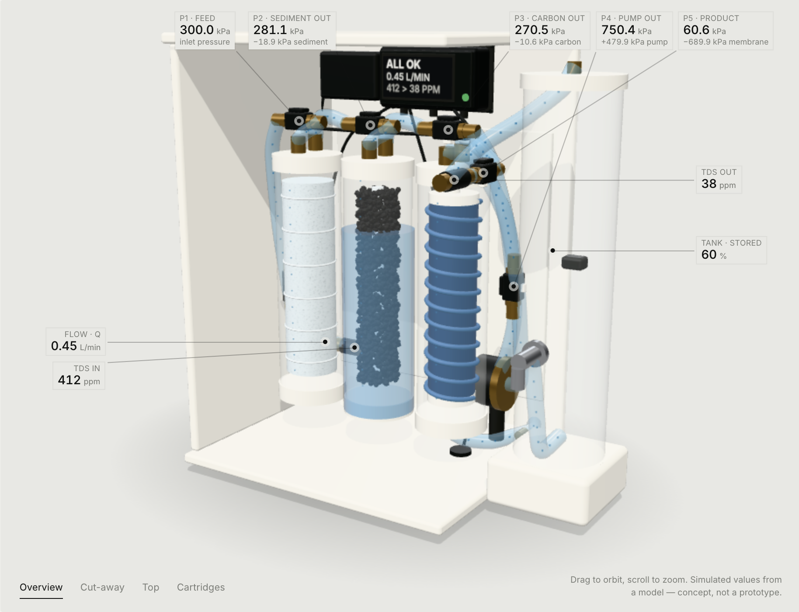
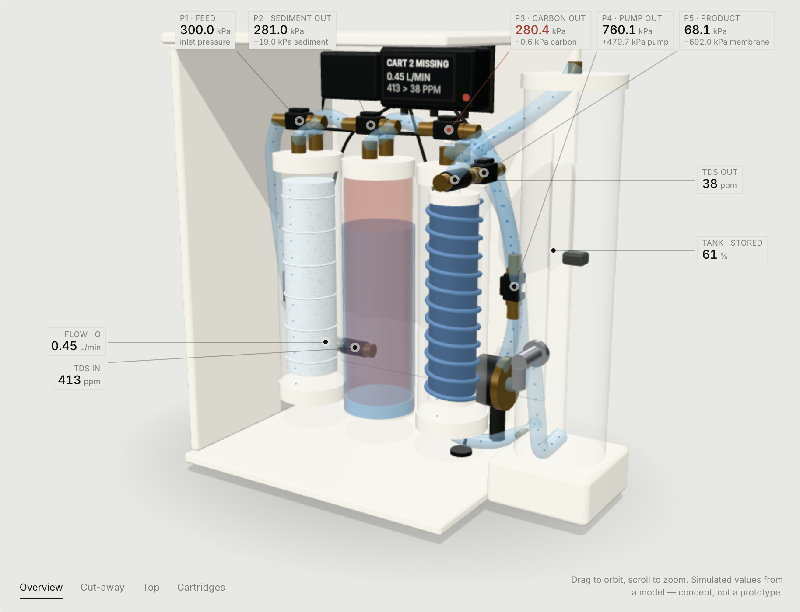

An instrumented domestic RO purifier that measures the water path: per-stage pressure drop, pump health, and a fail-locked dispense.
The Collector — Alliance University, Bengaluru. Water purifier track (Track 2), area of exploration unchanged from the abstract: measured filter health in domestic RO purifiers. Team of two: Prahalad Singh Gaur (sensors, firmware, validation) and Sanskar Kharya (mechanical integration, enclosure, test rig).
Filter life in a domestic RO is estimated, never measured — days and litres converted to a percentage. The only real sensors, TDS in and out, cannot see the water path: TDS reads conductivity, so it cannot detect a housing refitted without its cartridge, a bypassed membrane, or a loaded pre-filter — and WHO sets no health-based TDS guideline, so "TDS 12" is not a safety statement. India's service chain makes these failure modes routine: ~37.7 M waterborne-disease cases a year, AMC-dependent service visits, and documented counterfeit-cartridge incidents.
Our solution: a pressure tap on both sides of every element in the water path — including the booster pump. At steady flow, ΔP ÷ Q is a fingerprint of each cartridge, recorded when new and re-checked at every service: a loaded stage climbs (≈3× baseline), a removed or bypassed stage collapses (<0.35×), and the pump's measured boost gives a motor-health signal no domestic purifier carries today. Any water-path fault locks the dispense valve — detection that ends in protection, not just a warning light.
| Module | Status and evidence | Sourcing |
|---|---|---|
| Water-path physics model | Per-stage ΔP = k·Q·R with flow normalisation; pump boost with flow droop; verified ladder P1 300 → P2 281 → P3 271 → P4 751 → P5 61 kPa at 0.45 L/min | n/a |
| Interactive 3D design twin | Cut-away model of the full water path (pump, tank, faucet, reject line, valves); 9 simulated states; live trace, table and controller display; runs on any phone browser | n/a |
| Four-state validation protocol | New / clogged / removed / bypassed + interlock test; bench targets written as targets (±4% repeatability, <0.35× for removed/bypassed) | n/a |
| Bill of materials + bench plan | India-priced, vendor-pinned (Robu / KitsGuru / RO-spare markets); ten-day build sequence with cut-list | ordered |
| Bench rig (hardware) | Components ⟦ordered on 25 Oct / in hand⟧; plumbing and ESP32 firmware per the Week-1 plan in the abstract; first live ΔP logging scheduled 26–28 Oct | in transit |
| Firmware (ESP32-S3) | Architecture fixed: 2 × ADS1115 (16-bit I2C) for all analogue channels, 20 Hz sampling with pump-cycle averaging, OLED status; bench bring-up this week | in hand |
Sourcing risks flagged in the abstract — status: the critical risk was water-safe pressure sensing. Resolved by specification: the common hobby die (XGZP6847) is gas-only, so we specified stainless-diaphragm G1/4 transducers (0–1.2 MPa, 0.5–4.5 V, ₹686–1,149 ea, verified in stock at KitsGuru/Robu) read through ADS1115 instead of the ESP32 ADC. All other line items have an Indian supplier with a verified listing; no import dependencies remain.


| Head | Abstract estimate | Committed / spent | Notes |
|---|---|---|---|
| Sensors (5 × pressure, flow, 2 × TDS) + ADS1115 ×2 | ₹3,010 | ₹⟦ ⟧ | stainless transducers + 16-bit I2C ADC |
| Pump, valves, float switch, flow restrictor | ₹1,824 | ₹⟦ ⟧ | E-Chen 75–100 GPD, 2 × solenoid, FR-450 |
| Controller, OLED, relays, power (SMPS + buck) | ₹2,178 | ₹⟦ ⟧ | ESP32-S3, 24 V 3 A SMPS, separate logic rail |
| Plumbing, cartridges, membrane, tank, enclosure | ₹4,150 | ₹⟦ ⟧ | 10" cartridges, 75 GPD membrane, 7 L tank |
| Contingency + reference gauge (validation only) | ₹2,038 | ₹⟦ ⟧ | glycerin gauge shared lab equipment |
| Total prototype budget | ₹13,200 | ₹⟦ ⟧ | abstract estimated ₹⟦9,000–12,000 — confirm abstract figure⟧ |
Fill every ⟦ ⟧ from your order invoices before export. If a head differs from the abstract, keep the abstract column as written and explain the delta in §5 — judges check this table against the video.
| Fail-safe | Trigger → action | Status |
|---|---|---|
| Fail-locked dispense | any stage < 0.35× baseline → dispense solenoid refuses, "DO NOT USE" on display | logic simulated end-to-end in the design twin (verified, reproducible); firmware task this week; solenoid in hand |
| Dry-run guard | P1 ≈ 0 kPa (no feed) → pump disabled, auto-resume when water returns | simulated; one firmware comparison on the live P1 channel |
| Leak shutdown | flow with the tap closed → inlet solenoid closes, pump stops | simulated; floor leak probe is two wires + a pull-up (₹0 effectively) |
| Tank-full stop | float switch opens at full storage → production pauses, resumes on draw | simulated incl. auto-resume; float switch in hand |
| Pump watch | boost < 0.75× its flow-normalised baseline → service warning before flow dies | simulated ("Weak pump" state); comes free with the five-tap layout |
Round 3 will demonstrate the interlock and dry-run guard working on the bench rig, benchmarked against NSF/ANSI 58's automatic shut-off expectation and IS 16240:2023's recovery requirement.